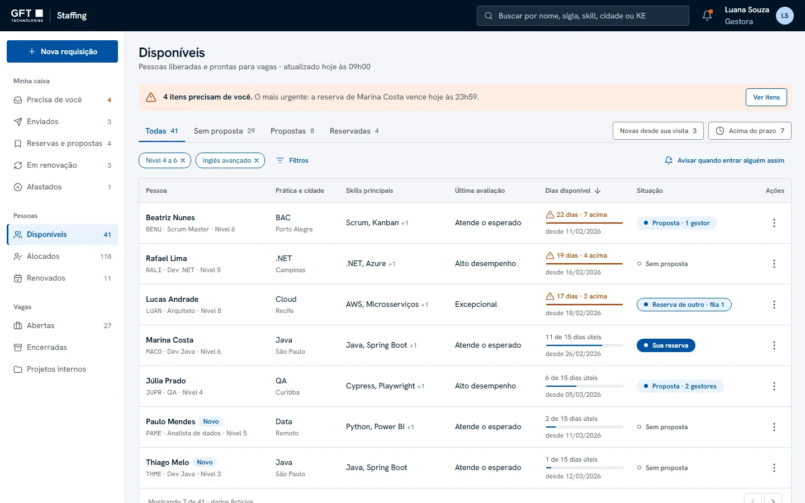
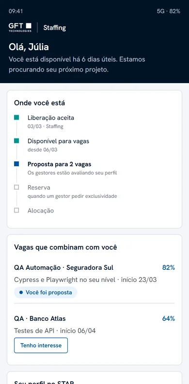
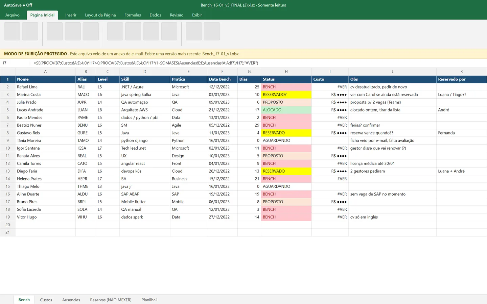
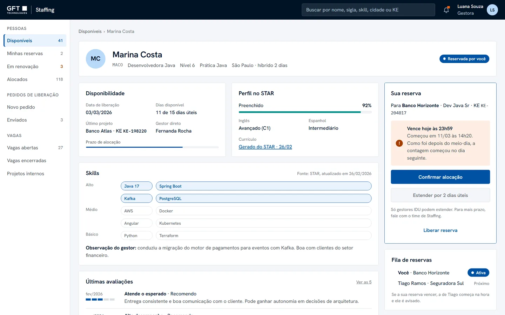
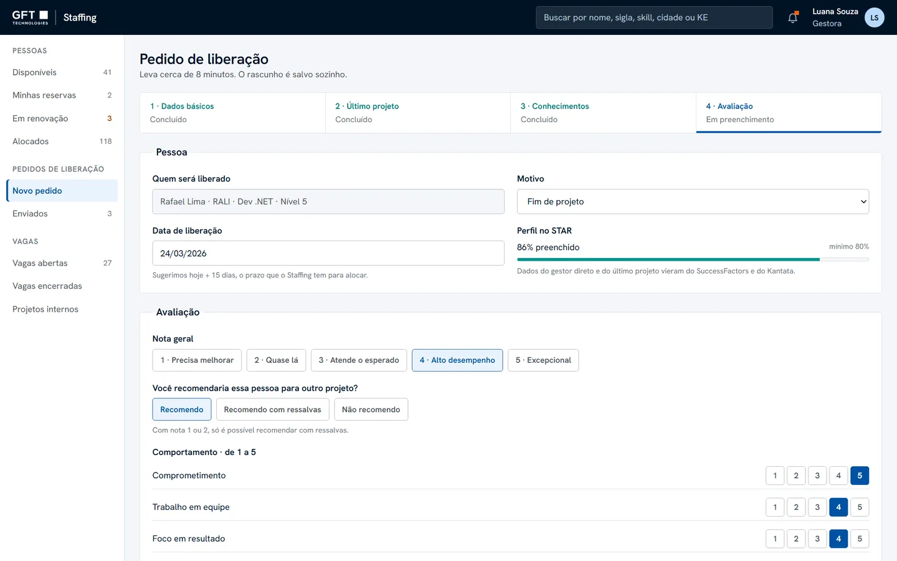
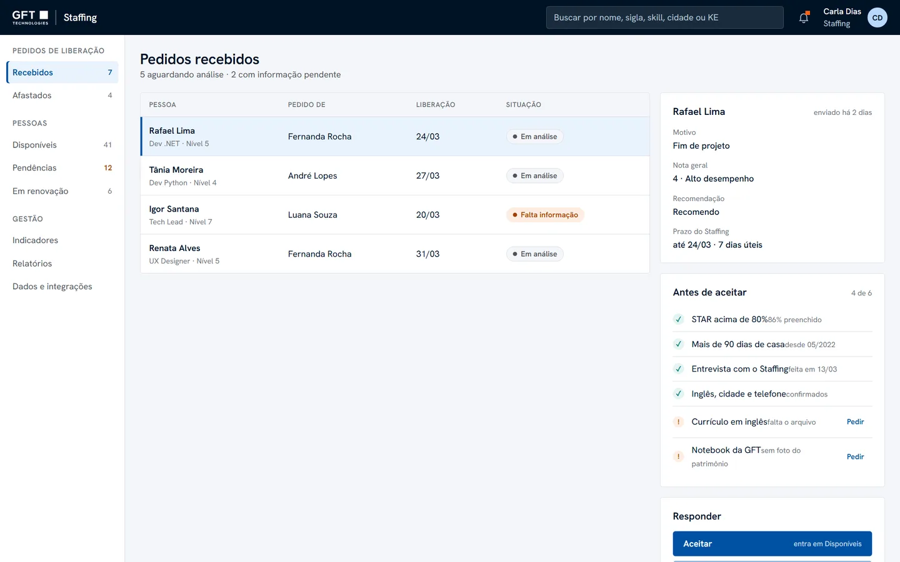
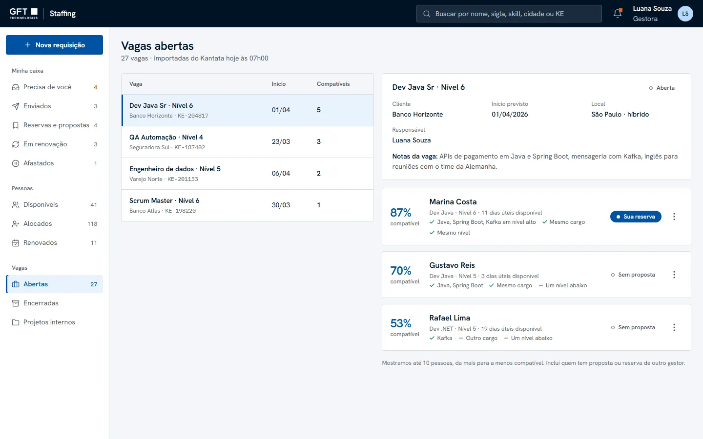
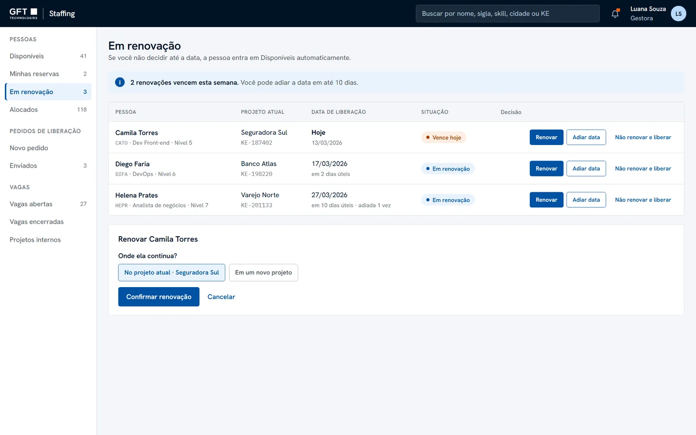
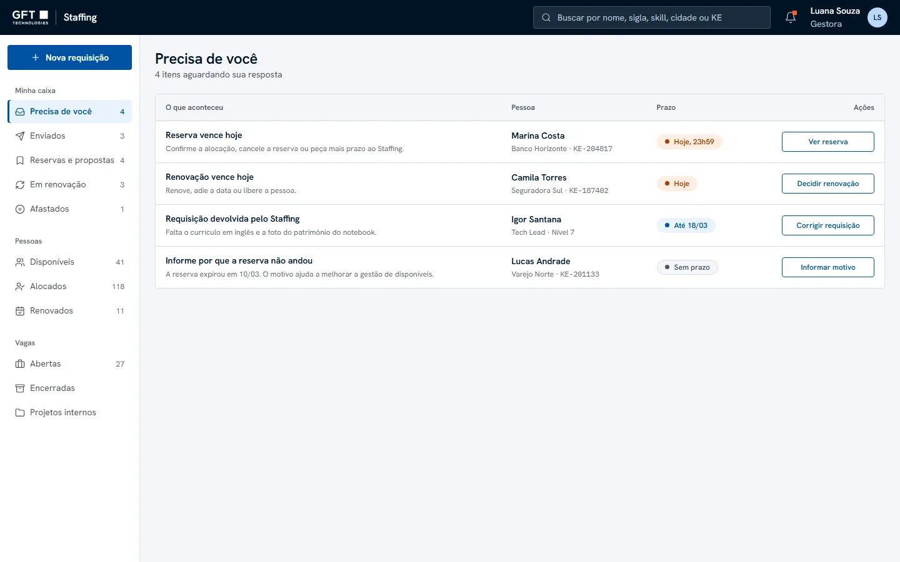
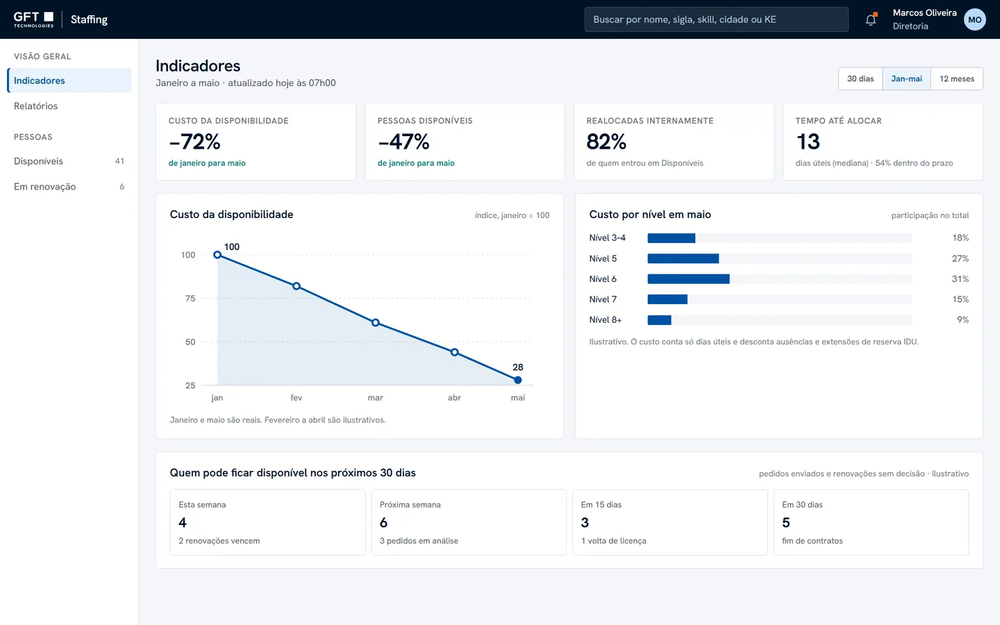

An outdated list
A spreadsheet updated and emailed to every manager, every day.
An internal product that replaced a spreadsheet emailed every morning, and turned reallocating people between projects into a process with clear rules.


GFT sells specialists allocated to client projects. When a contract ends, the person goes to the bench and their cost falls on GFT. An internal Staffing team tries to reallocate them before anyone looks outside.
A spreadsheet updated and emailed to every manager, every day.
Reservations, allocations and releases were asked for by email and Teams.
About three times a day, Staffing crossed people and roles by opening CV after CV.
The cost came from another spreadsheet with complex formulas, and the figures were questioned.

The 2021 business case estimated 45 hours a week spent managing the spreadsheet. I joined in October 2021 as the only designer, end to end, and also acted as Product Owner, accountable to GFT’s executive board for the product’s results.
Interviews with managers, Staffing and people on the bench; personas, journeys and the inception.
Backlog, roadmap and business rules, prioritised with the development team.
UI and documented design system, usability tests with a navigable prototype, quick guide and video manual.
Three access profiles (manager, IDU manager and Staffing) and five systems to integrate: Kimble for roles and people, STAR for skills, SuccessFactors for absences, ADP for holidays and SharePoint for CVs.
I interviewed the three profiles: what makes allocation hard, how long it takes, how to choose between three candidates, and whether time on the bench weighs on the decision. After launch, research continued with five roles using the system.
profiles interviewed in discovery
weeks from discovery to inception
roles in continuous research after launch
“I only know whether someone really fits the role when I open the CV.”
Staffing analyst
“Again? The CV?”
Person on the bench
“Am I being considered for any role?”
Person on the bench
Some managers opened roles to keep track, and never learned whether they had been filled.
People on the bench could be supporting projects already running.
For some, a warning sign. For others, no market for that technology, or “I’ve already talked to them”.
As Product Owner, the business rules were my product decisions. The interface was where they became visible, so nobody had to remember them.
Managers reserved people from an old copy of the spreadsheet.
Real-time status and a reservation queue. A reservation takes priority over proposals, expires on its own and passes to the next in line.
“I only know whether someone fits when I open the CV.”
Search by skill connected to STAR, 14 combinable filters and the ten best candidates for each role, by match score.
Releases were requested by email.
A four-section release request with clear statuses. The date already suggests today plus 15 days, the Staffing deadline.
Allocation criteria were subjective.
A structured evaluation. With a rating of 1 or 2, “I recommend” is disabled and only a recommendation with reservations is possible.
“Again? The CV?”
CVs stored once and reused. Only people with their STAR profile over 80% complete enter the list.
Cost came from a spreadsheet nobody trusted.
Cost in real time by level, role and practice, discounting absences.
The flow by role
Click a step to see what happens there and which rule applies.
Manager who releases · Release
Four sections instead of an email: profile, reason, evaluation and date. The date already suggests today plus 15 days.
Staffing · Screening
Staffing reads the request and decides. Every answer reaches the manager, with the reason.
Manager who releases · Screening
When something is missing, the request goes back to the manager with what to fix, then returns to screening.
Staffing · On the list
Once accepted, the person enters the list every profile sees, with the same status for everyone.
Manager who allocates · Match
Search by skill connected to STAR, or open a role and see the best candidates by match score, with the reasons for each match.
Manager who allocates · Proposal
More than one manager can propose the same person. The status tells everyone that the person is already being considered.
Manager who allocates · Reservation
The first to reserve holds the person. If the reservation expires, the person goes back to the list and the next manager in the queue gets their turn.
Staffing · Allocation
Staffing confirms the allocation and the person leaves the list. Bench time and cost stop counting.
Manager who releases · Allocation
Before the contract ends, the project manager decides. Not renewing starts a new release here, and the cycle begins again.
How a reservation counts
In continuous research, managers said the deadline counted holidays. The rule became: only business days, skipping weekends and approved absences. Reserved after noon, it starts the next day.
Counts Thursday and Friday. Expires Friday at 23:59.
Starts on Friday and skips the weekend. Expires Monday at 23:59.
29 automated test scenarios covered these rules: before and after noon, weekends and conflicts between managers.
The flows below were shipped between 2022 and 2023. I revisited the project in 2026 to demonstrate my delivery skills with Claude Code. The screens use fictitious data.







The first screen for every profile. Search says what it finds, and a bar shows business days on the bench against the 15-day deadline.
Skills, the last feedback and matching roles in one place. Reserving shows exactly when it expires, and can be undone.
Four sections instead of an email. STAR completeness is checked, the date is suggested and people under 90 days are blocked.
Accept, ask for missing information, reject with a reason or mark as not eligible. Every answer reaches the manager.
Roles imported automatically, with the ten best candidates by match score and the reasons for each match.
When a contract is not renewed, the release starts here, not by email. It came from continuous research.
Built like an email inbox. A fixed button opens a new request, Sent shows what happened to each one, and Needs You, new in this version, gathers only what depends on an answer. Each row keeps its actions in one menu, with the options valid for that person.
In the shipped version these reports lived in Power BI. The proposal brings them into the product, with the same figures the board followed.
“Am I being considered for any role?” was the one insight the shipped version did not answer, because there was no profile for the people themselves. The proposal gives them their status, the roles that match them and a way to show interest.
Visual identity & writing
When I revisited the project in 2026, I wrote an identity and writing guide: GFT’s corporate brand, and the Portuguese that managers and Staffing already use instead of the legacy English.
“Nobody goes without a project for lack of information.”
Guiding line of the identity
Navy identifies, blue is for what can be clicked, neutrals organise. State colours only for what needs attention, always with text.
GFT navy Logo, top bar, titles and main text · 18.7:1 on white
Action blue Buttons, links, selection and focus · 7.7:1 on white
Light blue Highlights and the active item · 12.8:1 with navy text
Done Allocated, renewed, request accepted · 5.7:1 on white
Attention Deadline ending or overdue. Marker only; text uses #A63D00 · 6.4:1
Error Request rejected, invalid field, blocked action · 6.6:1 on white
Proportion on a typical screen
Neutrals 80% · Navy 10% · Action blue 6% · Light blue 2% · State 2%
One family for everything, a mono only for codes people copy or compare. GFT Corporate is proprietary, so prototypes use Hanken Grotesk.
Hanken Grotesk · 400 500 600
AaIBM Plex Mono · codes
The same statuses as the shipped system, translated. Open statuses use an outline, closed ones a fill, and every one has a dot and text, so it can be read without colour.
1 · Pedido de liberação
Em análiseFalta informaçãoRecusadoAfastadoCancelado2 · Disponível para vagas
Sem propostaPropostoReservado3 · Saída
AlocadoEm renovaçãoRenovadoSystem names (Kantata, STAR) and company acronyms (KE, IDU) stay. Everything else is translated by meaning, not word for word.
The home screen. “Bench” still works in conversation, but the interface uses the word that describes the person.
“Unassignment” is jargon. The manager releases the person to other roles.
It says the real reason. “Not eligible” sounds like a judgement about the person.
“Opportunity” is a sales term. For whoever allocates, it is a role.
It shows the match percentage and the reasons for it.
15 business days. The acronym meant nothing to most managers.
A Staffing colleague who knows the rule: direct, cordial and specific. Real system messages, rewritten.
Measured over time by the number of people allocated, and reported to the executive board.
From January to May 2023.
Same period, same calculation.
of people who entered the bench were reallocated internally
business days, median time to allocation
allocated within the 15-day deadline
usage growth from Q1 to Q2 2022
How these were measured: people and cost come from the bench reports the board followed, comparing January and May 2023. Reallocation, time to allocation and usage were calculated from the platform’s own records, January 2022 to February 2023, using totals only. Values in currency are not shown.
Before & after
Drag, tap or use the arrow keys. Both images use fictitious data.
Reflections
A feature nobody finds does not exist. In continuous research, none of the five people knew the top search found skills: they all used it for names. This version makes the search say what it finds. The other lesson is about rules: when the interface shows the rule, people stop negotiating it by email.
Close the gap with the people on the bench, who still learned about roles from others, and measure time to allocation by practice, to see where the market, not the process, is the bottleneck.
Or get in touch to talk about a product challenge.
All names in the screens are fictitious. Interviewees are identified by role only.